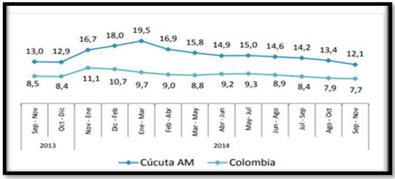
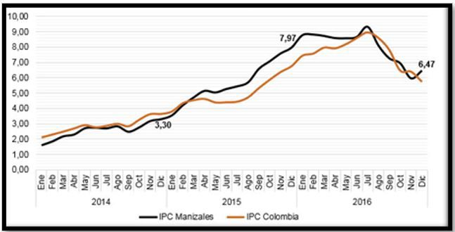
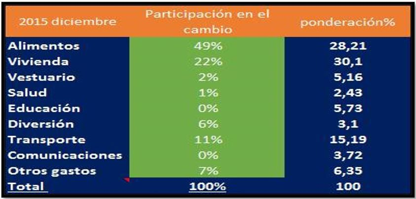
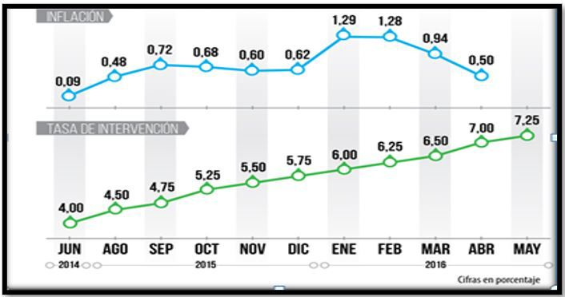
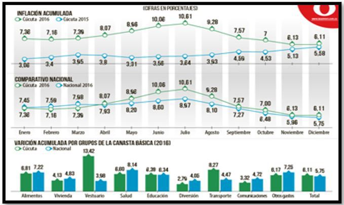
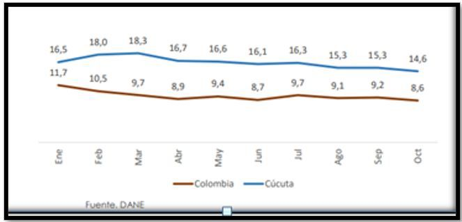
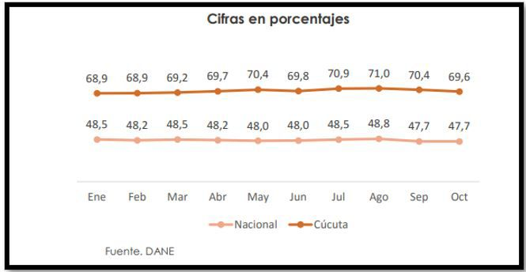
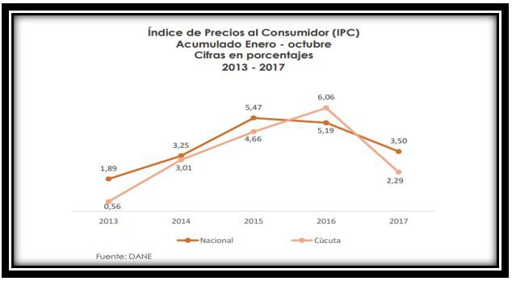
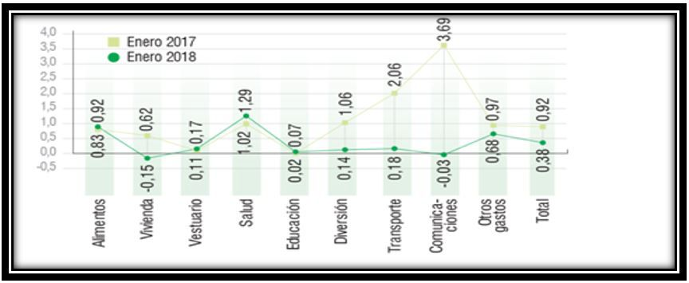

Introducción
La inflación se define como un aumento
continuado de los precios, o lo que es lo
mismo, una disminución continuada del valor
del dinero. El dinero pierde valor cuando con
él no se puede comprar la misma cantidad
de bienes que con anterioridad. Ante esto
(Banco.de.la.Republica, 2015) Argumenta que
se da por dos causas, por demanda cuando
los agentes económicos es decir, gobierno,
familias y empresas tratan de comprar más
productos de los que hay disponibles, y
por oferta cuando se reduce la cantidad de
productos disponibles para la venta. Es decir,
cuando la cantidad demandada es mayor
que la cantidad ofrecida, se vuelve necesario
aumentar los precios, esto con el fin de que
los demandantes disminuyan, y se establezca
un punto de equilibrio en las ventas.
Ante esto, la Inflación es un uno de los temas
más importantes de la actualidad, sobre el cual
gira gran parte de la actividad económica de
un país. En América latina se encuentra el país
con mayor índice de inflación a nivel mundial,
Venezuela. (centro, 2018)
Venezuela está entrando en un terreno de
hiperinflación, El FMI (fondo monetario
internacional) predice que puede llegar a
2.349% en 2018, esto haría la escasez actual
de productos aún peor, por tanto una crisis
económica de esa proporción es el resultado
de un manejo económico precario, que
involucra una combinación de políticas fiscales
y monetarias desastrosas.
En el caso de Venezuela el gobierno de Nicolás
Maduro parece ignorar la problemática que
está viviendo el país al no tomar medidas
drásticas en cuanto a la búsqueda de la
desinflación y así mejorar la economía y la
calidad de vida de sus habitantes.
Así mismo (Portafolio, 2016) afirma que esta
problemática se debe a que el Gobierno
venezolano gastó más dinero que el que
recogió. Un gobierno obtiene dinero con
impuestos, venta de bonos al mercado externo
e interno, y como esto no fue satisfactorio tuvo
que venderle bonos al banco central y este
imprimió dinero como una forma de pago, lo
que generó la inflación. Como consecuencia
de esta hiperinflación hay caos económico,
pobreza, falta de alimentos, medicinas y miles
de venezolanos emigrando diariamente en
busca de mejores oportunidades.
Esta situación se está presentando en
Colombia, en donde se encuentra dentro
de una economía emergente (Barrientos,
2018), Particularmente Colombia es un país
emergente dentro de la economía mundial
aunque no tan elevada, ante esto (Dane,
informe de conyutura conomica Regional,
2015)informa que la inflación en Colombia
en el 2015 se situó en 6,77% la inflación más
alta en los últimos siete años, Los grupos de
bienes que más presionaron el alza fueron los
alimentos, en particular los perecederos por el
fenómeno de El Niño.
Cabe señalar que el resultado del fenómeno
del niño afectó al país, el principal impacto
estuvo en los alimentos que, al reducir su
disponibilidad en el mercado, llevaron a un
aumento sustancial en los precios. (Opinion,
2018)
En Norte de Santander en la ciudad de Cúcuta
se está presentando una situación contraria
con la inflacion, para el 2013 el Dane hizo su
análisis y destaco a Cúcuta como una de las
ciudades con menor índice de inflación, este
resultado se debe al ajuste de la economía en
la frontera y a la política monetaria del Banco
de la República, pues Cúcuta siempre se ha
destacado como una de las ciudades con los
precios más bajos.
Se consideraba que Cúcuta tenía precios bajos
gracias a su zona fronteriza, a las importaciones
y exportaciones que se hacían diariamente,
todo esto contribuía a una competencia
justa en el precio de los productos, a su vez
(Arenales P. , 2017) La problemática en Norte
de Santander ha traído consigo consecuencias
como desempleo
Del mismo modo el (Opinion, 2018) afirma en
el último informe publicado sobre el (IPC) para
enero posicionó a Cúcuta entre las ciudades
con mayor variación en la inflación con un
promedio de 0,46%, los grupos que más
contribuyeron fueron transporte, alimentación
y desempleo. Esta variación tiene mucho que
ver con el cierre de la frontera, cada día llegan
miles de inmigrantes esto provoca un aumento
en la tasa de desempleo y genera competencia
desleal en la economía. Dinero (2015)
La actividad cucuteña perdió su impulso,
el comercio con Venezuela se resintió y su
efecto permanece latente en la actualidad, es
probable que con el cierre de la frontera se
presenten dos tendencias encontradas. Por un
lado, menor inflación por el mayor deterioro
económico, y por la otra, mayor inflación por
menos competencia desleal de los productos
que se adquirían a través de la frontera y que
entraban de contrabando.
El comercio de Cúcuta desde hace mucho
tiempo ha estado directamente implicado
con la venta de productos que se traían de
Venezuela por contrabando, mucha gente se
dedicaba a la venta de combustible, víveres
y otros productos traídos de Venezuela,
indirectamente esto generaba empleo en
la ciudad, desde el cierre de la frontera este
proceso ha cambiado notablemente, para los
empresarios esta tendencia es buena ya que les
ocasiona una disminución con la competencia
ilegal, Sin embargo para muchas familias
que por muchos años se dedicaron a estas
prácticas es perjudicial, ya que su sustento
provenía de dichas ventas, además que profundiza crisis como la pobreza del país, y
así lo refleja (Suarez, 2017) En Colombia hay un
sesgo de información muy relevante en cuanto
a la pobreza del país, y esto afecta directa e
indirectamente los escenarios sociales en esta
región.
Objetivos
Generales
- Analizar la variación de la inflación en la ciudad
de Cúcuta en sus últimos cinco años.
Objetivos específicos
Específicos
- Identificar las causas y consecuencias de la
inflación en la ciudad de Cúcuta en los últimos
cinco años.
- Determinar la influencia que tuvo el cierre de la
frontera a la inflación de la ciudad de Cúcuta en los
últimos cinco años.
Justificación
Este trabajo se realiza con el fin de aportar
conocimiento acerca de la inflación en la ciudad
de Cúcuta en los últimos cinco años y su variación.
Por otro lado, el propósito de esta investigación
es dejarla como referencia teórica, es decir, un
punto de partida para futuras investigaciones que
se deseen realizar sobre el tema, en el ámbito
metodológico se pretende aportar conocimiento
científico que contribuya a la sociedad para que se
instruya en el tema, entienda y analice que es el
fenómeno de la inflación.
En el ámbito practico se dará a conocer más a fondo
como se calcula la inflación en la ciudad, se hablará
también del cierre de la frontera con Venezuela, la
cual es una causante de la variación de inflación
en la ciudad, ya que Cúcuta dependió muchos años del comercio informal de productos venezolanos,
los cuales se distribuían a un menor precio.
Marco Teórico
Inflación
La inflación se define como el alza generalizada
de los precios, es decir un aumento repentino en
el precio de los productos, por lo general se mide
por la variaciones del IPC (índice de precio al
consumidor) y es el promedio del precio de algunos
bienes y servicios.
Estos bienes y servicios son denominados canasta
básica, un aumento en dichos bienes producirá un
aumento en la inflación.
Conduce (Empresa C. t., 2011) afirma ¨La inflación
se presenta cuando la demanda general de bienes
se incrementa en relación a la cantidad de bienes
producidos, esto genera el aumento de los precios
para poder restablecer el equilibrio entre la oferta
y la demanda¨. Es decir, cuando la cantidad
demandada es mayor que la cantidad ofrecida, se
vuelve necesario aumentar los precios, esto con
el fin de que los demandantes disminuyan y se
establezca un punto de equilibrio en las ventas.
Causas de la inflación
Por otra parte, (economista, 2013) dice que la
inflación se da por dos causas, inflación de demanda
e inflación de oferta, la primera se cuando los
agentes económicos, es decir, gobierno, familias
y empresas tratan de comprar más productos de
los que hay disponibles, esto sucede cuando los
salarios aumentan más de lo que es necesario para
mantener el poder adquisitivo de los trabajadores.
La segunda cuando se reduce la cantidad de
productos disponibles para la venta, por ejemplo,
en los productos de la canasta básica, puede ser
cuando se pierde una cosecha que sería producida
para los consumidores, esto ocasionara un alza en
el mercado y por ende un aumento de precio de los
productos.
Tipos de inflación:
(Lira, 2016) Menciona dos tipos, “Inflación de
costos, el aumento en los costos de producción
(mano de obra, materias primas, impuestos),
también genera el aumento de los precios, puesto
que las empresas deben mantener un margen
de beneficios” Esta subida en los costes puede
deberse a muchos motivos: materias primas
más caras, subidas salariales de los empleados,
subidas de impuestos, etc. Estos mayores costes
para las empresas son pasados finalmente a los
consumidores. La inflación empujada por los
costes también se da en situaciones de monopolios
y oligopolios en las que unas pocas empresas
dominan el mercado y pueden decidir subir los
precios para aumentar los beneficios. “Inflación de
la moneda, es producida generalmente por parte de
los gobiernos, quienes mediante sus instituciones
competentes ponen en el mercado excesivas
cantidades de dinero “.
Consecuencias de la inflación:
A continuación (Empresa C. t., 2011)comenta
ciertas consecuencias de la inflación: el aumento
en el costo de la vida, los precios de productos
aumentan, el sueldo pierde su valor, ya que ahora se
gastará más en los productos de primera necesidad.
Y así mismo los ahorros en perdida, Las inversiones
a largo plazo se desalientan, debido a la inseguridad
en los precios de los factores productivos en un
futuro. La moneda local se devalúa, propiciando la
preferencia de monedas extranjeras.
Tipo De Investigación
La presente investigación es de tipo cuantitativa,
ante esto (International, 2018)
La investigación cuantitativa es una forma
estructurada de recopilar y analizar datos
obtenidos de distintas fuentes. La investigación
cuantitativa implica el uso de herramientas
informáticas, estadísticas, y matemáticas para obtener resultados. Es concluyente en su propósito
ya que trata de cuantificar el problema y entender
qué tan generalizado está mediante la búsqueda de
resultados proyectados a una población mayor.
Para esta investigación se va trabajar con el método
Cuantitativo, ya que los datos que se analizarán
son cuantificables, es decir, las tasas de inflación
que son dadas en porcentajes.
Diseño De La Investigación
El diseño para esta investigación sobre el análisis
de la inflación en Cúcuta en los últimos cinco años
será descriptivo y documental, así mismo (Scribd,
2017)
La investigación descriptiva, también conocida
como la investigación estadística, describe los
datos y características de la población o fenómeno
en estudio. La Investigación descriptiva responde
a las preguntas: quién, qué, dónde, porque, cuándo
y cómo. Aunque la descripción de datos es real,
precisa y sistemática, la investigación no puede
describir lo que provocó una situación. Por lo tanto,
la investigación descriptiva no puede utilizarse
para crear una relación causal, en caso de que una
variable afecta a otra.
Así que el diseño para esta investigación es
descriptivo, ya que se ordenaran los datos,
características, factores y demás variables. Tendrá
como finalidad definir, clasificar y catalogar el
objeto de estudio, en este caso la inflación en la
ciudad de Cúcuta en sus últimos cuatro años.
En cuanto al diseño documental, (AprendeEnlinea,
2016)
La investigación documental es el método
investigativo basado en la revisión de textos,
artículos, bibliografías, entre otros, ya existentes
sobre un tema y que pueden ser utilizadas para dar
inicio o traer a flote un tema ya tratado. Allí se
puede encontrar una investigación histórica hecha
ya sobre el tema de interés.
Del mismo modo se va a trabajar directamente sobre
textos, documentos y archivos físicos o digitales ya
existentes, es decir; el diseño será documental, con
el fin de recolectar, seleccionar, analizar y presentar
los datos ya documentados para poder mostrar los
resultados de esta investigación, a su vez apoyado
de documentos de la web de páginas oficiales,
(Arenales P. , 2017) es decir que la investigación
está basada en todos los datos que se adquieren del
internet para entender la problemática principal
Análisis
Año 2014
Según cifras provisionales del DANE, en 2014 el
PIB del departamento de Norte de Santander creció
4,7%, por encima del total nacional (4,4%) aunque
a un ritmo inferior respecto a un año atrás (5,2%).
Esta variación se dio como resultado del repunte en
Explotación de Minas y Canteras, particularmente
en actividades de extracción de petróleo y
carbón. El comercio exterior departamental
registró descensos tanto en exportaciones como
importaciones. Sin embargo, los indicadores
sectoriales indicaron una continuación de fortaleza
en el sector agropecuario con sacrificio de ganado,
y transporte aéreo. Respecto al mercado laboral, la
tasa de ocupación en 2015 se mantuvo en niveles
similares a los de 2014 al igual que la tasa global
de participación

Grafica 1.Comportamiento de la tasa de desempleo trimestral
(Dane, Precios y Costos, 2014)
En esta grafica nos muestra el balance que hubo en cuanto a la tasa de desempleo trimestral,
donde empezó con un porcentaje alto así a su vez fue disminuyendo.

Grafica 2.Variación anual de índice de precios al consumidor (IPC) serie mensual
(Dane, Precios y Costos, 2014)
Esta nos ilustra los precios y costos de cada mes para ver la variación que hubo.
Año 2015
El Departamento Administrativo Nacional de Estadística (Dane, inflacion, 2015) informó que la
inflación en Colombia en 2015 fue de 6,77, En alimentos los grupos con mayores variaciones en
los precios correspondieron a hortalizas y legumbres (41,53%), frutas (24,78%) y tubérculos y
plátanos (17,46)
El resto de los grupos se ubicaron por debajo del promedio: Vivienda (5,38%), Salud (5,30%),
Educación (5,11%), Transporte (4,87%), Comunicaciones (4,70%), Diversión (4,52%) y Vestuario
(2,99%).

Grafica 3.Participación en el cambio de la inflación en el 2015.
(Dane, contruccion dinero, 2015)
Esta tabla nos permite observar la variación que hubo en diciembre del año 2015 en cuanto a los
grupos y subgrupos.
AÑO 2016
Cúcuta fue una de las ciudades más costosas para vivir durante 2016. El Índice de Precios al
Consumidor (IPC) o inflación, terminó en 6,11%, el sexto más alto del país, sintiendo los cambios
que trajo a la economía local el cierre fronterizo y, por supuesto, el fenómeno de El Niño.
La cifra que también estuvo por encima del acumulado nacional (5,75%), presentó fuertes
incrementos en los segmentos de vestuario, transporte y alimentos.
Además, que hubo una variación significativa en los gastos de diversión, los cuales terminaron
con un acumulado del 2,79%. En este sentido vale resaltar que durante todo el 2016 las agencias
de viaje de Cúcuta aumentaron los esfuerzos en la promoción de destinos turísticos nacionales,
dejando de lado a Isla Margarita (Venezuela), que se había convertido en el destino preferido
por los cucuteños.

Grafica 4.Evolución de las tasas de interés e inflación
(Dane, tasa de interes e inflacion, 2016)
Esta grafica nos permite detallar que la inflación empezó baja y se mantuvo estable y después
tuvo un incremento, y en cuanto a la tasa vario.

Grafica 5.Comportamiento de costo de vida.
(Dane, variacion , 2016)
Esta grafica nos ilustra las diferencias que hay en el comportamiento de la inflación acumulada,
la nacional y la canasta básica.
Año 2017
Según el Departamento Administrativo Nacional de Estadística (DANE) la tasa de desempleo a
nivel nacional llego a 8,6% en octubre del 2017. Por su parte, Cúcuta y su Área Metropolitana
mantuvo tasas de desempleo por encima de 15% hasta octubre del presente año, pues en el
actual informe reportado por el DANE, el AMC alcanzó una tasa de 14,6%.

Grafica 6.Comportamiento de la tasa de desempleo.
(Dane, Desempleo, 2017)
Durante el último trimestre de análisis los sectores con mayor participación en la generación de
empleo en el Área Metropolitana de Cúcuta fueron comercio, hoteles y restaurantes con el 40%.
Servicio comunales, sociales y personales con el 20% e industria manufacturera con un 15%

Grafica 7.Cifras en porcentajes
La tasa de informalidad en cucuta y su area metropolitana durante lo recorrido del año 2017
ha presentado un comportamiento constante con tasas entre el 68% y el 71%. Estas cifras han
ubicado a la ciudad como la mas informal a nivel nacional.

Grafica 8.Índice de precios
(Dane, IPC, 2017)
Al analizar la gráfica anterior se puede observar que para el año 2017 el índice de precios al
consumidor para la ciudad de Cúcuta y su área metropolitana se encuentra en 1.3 puntos
porcentuales por debajo de la media nacional. Es importante mencionar que, en el 2016 por
primera vez en los últimos cuatros años, el índice de precios se encontró por encima de la
media nacional, este fue un año marcado por diferentes cambios en la economía que llevaron
a los altos índices presentados.
Año 2018
Cúcuta se posicionó como la quinta ciudad que registró mayor variación en la inflación, por
encima del promedio nacional (0,24%). Los subgrupos que más aumentaron en el último
mes, según el más reciente informe del Departamento Administrativo Nacional de Estadística (Dane), fueron
salud (4,69%), educación (5,50%) y otros gastos (2,28%).Los subgrupos que más
aumentaron en el último mes, según el más reciente informe del Departamento Administrativo
Nacional de Estadística (Dane), fueron salud (4,69%), educación (5,50%) y otros gastos (2,28%).

Grafica 9.IPC porcentajes
(Dane, IPC, 2018)
En esta grafica podemos observar que el índice
de precios al consumidor en la ciudad de
Cúcuta en el año 2018 tuvo un incremento en
algunos grupos, como fue el de los alimentos
y la salud. Por otra parte tuvo una disminución
en el grupo de vivienda, transporte, entre otros.
El grupo que presento la disminución más alta
comparado con el año anterior (2017) fue el
grupo de las comunicaciones, paso de 3,5
puntos a 0,0 puntos, una diferencia bastante
significativa.
Conclusiones
Para un país es de suma importancia conocer
los índices de inflación, esto permite tener una
economía más sólida, por ejemplo para los
empresarios o inversionistas genera confianza
tener conocimiento de la inflación del lugar
donde pretenden invertir su dinero. Permite
también tener conocimiento del poder
adquisitivo de las familias, si los precios de la
canasta básica aumentan a las familias se les
haría más difícil acceder a los productos, es
decir su poder adquisitivo disminuiría.
Cuando se presentan variación o cambio en
los precios de algún producto o servicio, se
está hablando del fenómeno de la inflación.
Luego de analizar la variación de la inflación
de Cúcuta en los últimos años se concluye que
se ha presentado una disminución notable
comparada con las otras ciudades del país, la
inflación baja tiene consecuencias positivas
para una ciudad, ya que la economía puede
utilizar mejor sus recursos, promoviendo la
fabricación o producción de bienes y servicios y
eliminando las dudas de posibles empresarios
de invertir o no en la ciudad y esto contribuye
a mejorar las condiciones de vida de las clases
menos favorecedoras.
Referencias
- AprendeEnlinea. (2016). Investigacion Documental.
http://aprendeenlinea.udea.edu.co/lms/moodle/file.php/658/Glosario_Invest_Documental_final_-_Lina_Rpo.pdf
- Arenales, P. (2017). Situación económica
del Norte de Santander por el carbón. Convicciones,
P.74.file:///C:/Users/pc2/Downloads/239-Texto%20del%20art%C3%ADculo-474-1-10-20180707%20(1).pdf
- Arenales, P. (2017). Situación económica
del Norte de Santander por el carbón.
covicciones, p.73.file:///C:/Users/pc2/
Downloads/239-Texto%20del%20
art%C3%ADculo-474-1-10-20180707%20(1).
pdf
- Banco.de.la.Republica. (2015). Inflacion Banco
de la Republica. Banco de la Republica
de Colombia, https://www.youtube.com/watch?v=gkDQGribCfc
- Barrientos, E. (2018). Modelo gerencial dentro
del paradigma del capital intelectual. Revista
de Investigación en Negocios , p.86. http://ppct.caicyt.gov.ar/index.php/rain/article/view/V4n1a7/pdf
- centro, E. d. (2018). https://www.el-carabobeno.com/por-que-hay-hiperinflacion-en-venezuela/
- Dane. (2014). Precios y Costos. https://www.dane.gov.co/files/icer/2015/ICER_Norte_de_Santander2015.pdf
- Dane. (2015). contruccion dinero. https://www.dinero.com/economia/articulo/la-inflacionalta-ultimos-anos/217685
- Dane. (2015). inflacion. http://www.dane.gov.co/index.php/52-espanol/noticias/noticias/3749-indice-de-precios-al-consumidor-ipcdiciembre-2015
- Dane. (2015). informe de conyutura conomica
Regional. https://www.dane.gov.co/files/icer/2015/ICER_Norte_de_Santander2015.pdf
- Dane. (2016). tasa de interes e inflacion. https://www.dane.gov.co/files/icer/2015/ICER_Norte_de_Santander2015.pdf
- Dane. (2016). variacion . https://www.dane.gov.co/files/icer/2015/ICER_Norte_de_Santander2015.pdf
- Dane. (2017). Desempleo. https://www.dane.gov.co/files/icer/2015/ICER_Norte_de_Santander2015.pdf
- Dane. (2017). IPC. https://www.dane.gov.co/files/icer/2015/ICER_Norte_de_Santander2015.pdf
- Dane. (2018). IPC. https://www.dane.gov.co/files/
icer/2015/ICER_Norte_de_Santander2015.pdf.
economista, E. (2013). Inflacion . https://www.eleconomista.es/diccionario-de-economia/inflacion
- Empresa, C. t. (2011). Causas y Consecuencias de
la inflacion. https://blog.conducetuempresa.com/2011/09/la-inflacion.html
- Empresa, C. t. (2011). Consecuencias de la
inflación. https://blog.conducetuempresa.
com/2011/09/la-inflacion.html. International,
S. (2018). Investigacion cuantitativa . https://www.sisinternational.com/investigacioncuantitativa/
- Lira, B. (2016). como fijar los precios cuando hay alta
inflacion . http://virtual.iesa.edu.ve/servicios/wordpress/wp-content/uploads/2016/04/Liraene-mar-2016.pdf
- Opinion. (2018). Indice de Precio del Consumidor.
https://www.laopinion.com.co/economia/cucuta-una-de-las-ciudades-con-menosinflacion-en-enero-148641
- Portafolio. (2016). hiperiflaion en venezuela. https://www.portafolio.co/internacional/inflacion-envenezuela-es-la-mas-alta-del-mundo-502312
- Scribd. (2017). Investigacion Descriptiva https://es.scribd.com/doc/47429622/INVESTIGACION-DESCRIPTIVA
- Suarez, N. (2017). Estrategias pedagógicas de
micro finanzas a los. Convicciones, 10.file:///C:/
Users/pc2/Downloads/232-Texto%20del%20art%C3%ADculo-460-1-10-20180707.pdf